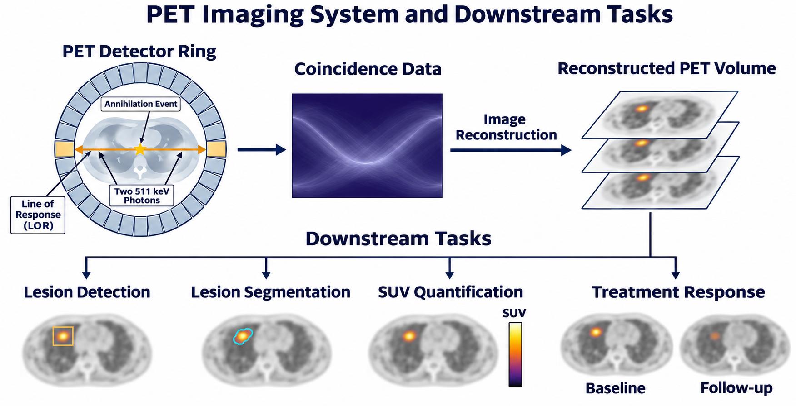

Whole-body 18F-FDG PET reveals glycemic state-dependent reorganization of directed inter-organ metabolic networks
European Journal of Nuclear Medicine and Molecular Imaging · 53(13), 7992–8004
Computational imaging
Guangdong Industry Polytechnic University
School of Artificial Intelligence · Full-time Faculty
My research lies at the intersection of computational imaging and machine learning. I develop image reconstruction algorithms that integrate imaging physics with data-driven priors, with applications in low-dose PET, accelerated MRI, tensor analysis, and compressive spectral imaging.


Sep 2026–Present
Full-time Faculty Member
School of Artificial Intelligence, Guangdong Industry Polytechnic University
Aug–Sep 2026
Postdoctoral Fellow
Shenzhen Institutes of Advanced Technology, Chinese Academy of Sciences
Jun 2024
PhD
Sun Yat-sen University
Recovering activity distributions from low-count measurements using acquisition models and learned priors.
Reconstructing images from undersampled MRI and sparse-view CT measurements with data consistency.
Restoring hyperspectral images using spatial and spectral priors.
Modeling multidimensional images with low-rank tensor priors and nonlocal structure.
Reconstructing spectral data from coded aperture snapshots and complementary measurements.
No publications match these filters.
European Journal of Nuclear Medicine and Molecular Imaging · 53(13), 7992–8004
The Innovation Informatics · 2(3), 100052
Medical Image Analysis · 109, 103944
Information Fusion · 124, 103366
Physics in Medicine & Biology · 70(17), 175008
Optics & Laser Technology · 171, 110424
Computers and Electrical Engineering · 115, 109133
IEEE Sensors Journal · 24(4), 5097–5106
Optics and Lasers in Engineering · 162, 107413
A deep unrolling network with cross-stage memory and spatial and frequency learning, evaluated on low-dose PET, undersampled MRI and sparse-view CT.
Repository · GitHubA self-supervised unfolding method for dual-camera compressive imaging that uses a panchromatic measurement to guide hyperspectral reconstruction.
Repository · GitHubA model-based unfolding method that combines low-rank tensor structure and spatial–spectral priors for snapshot hyperspectral reconstruction.
Repository · GitHubYoung Scientists Fund (Category C), National Natural Science Foundation of China
General Program, Natural Science Foundation of Guangdong Province
General Program (78th Round), China Postdoctoral Science Foundation